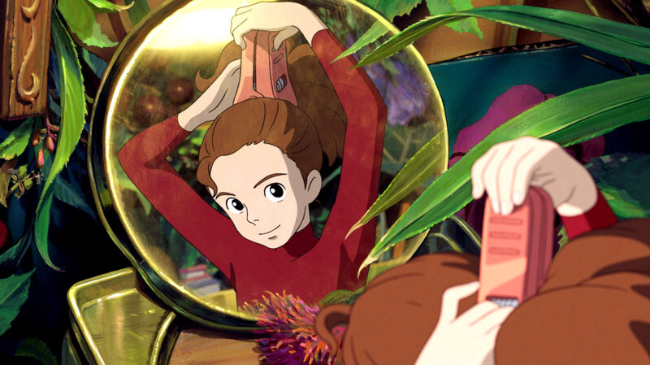
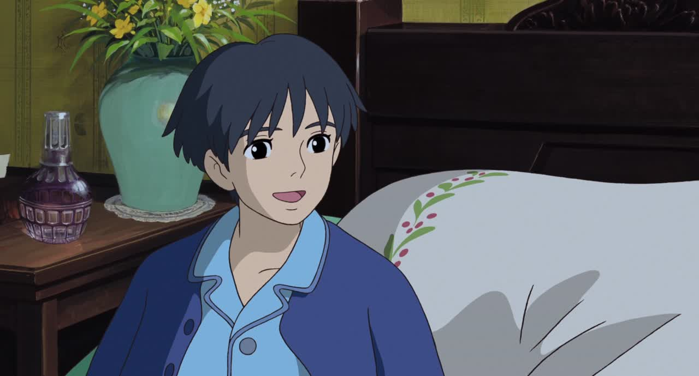
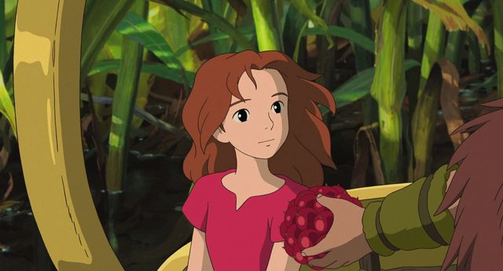

PRVI PARAGRAF
Arrietty, titled Arrietty the Borrower (Japanese: 借りぐらしのアリエッティ, Hepburn: Kari-gurashi no Arietti) in Japan and The Secret World of Arrietty in North America, is a 2010 Japanese animated fantasy film directed by Hiromasa Yonebayashi as his feature film debut as a director, animated by Studio Ghibli for the Nippon Television Network, Dentsu, Hakuhodo DY Media Partners, Walt Disney Japan, Mitsubishi, Toho and Wild Bunch, and distributed by Toho. The novel was adapted as a screenplay by Hayao Miyazaki and Keiko Niwa,[2] based on the 1952 novel The Borrowers by Mary Norton, an English author of children's books, about a family of tiny people who live secretly in the walls and floors of a typical household, borrowing items from humans to survive. The film stars the voices of Mirai Shida, Ryunosuke Kamiki, Shinobu Otake, Keiko Takeshita, Tatsuya Fujiwara, Tomokazu Miura, and Kirin Kiki, and tells the story of a young Borrower (Shida) befriending a human boy (Kamiki), while trying to avoid being detected by the other humans.

Ghibli announced the film in late 2009 with Yonebayashi making his directorial debut. Miyazaki supervised the production as a developing planner.[3] The voice actors were approached in April 2010, and Cécile Corbel wrote the film's score as well as its theme song. This film marks the cinematic debut of Hiromasa Yonebayashi, as well as the British dub marking the cinematic debut of Tom Holland.
The film was released in Japan on July 17, 2010. Arrietty received very positive reviews, praising the animation and music. It became the highest grossing Japanese film at the Japanese box office for the year 2010,[4] and grossed over $145 million worldwide.[1] The film also won the Animation of the Year award at the 34th Japan Academy Prize award ceremony.[5] Two English-language versions of the film were produced, a British dub distributed and released by StudioCanal in the United Kingdom on July 29, 2011 and an American dub released by Walt Disney Pictures in North America on February 17, 2012.
A boy named Shō remembers the week in summer he spent at his mother's home with his maternal great aunt, Sadako, and the housemaid, Haru. When Shō arrives, he gets a glimpse of Arrietty, a Borrower girl, returning to her home through an underground air vent.
At night, Arrietty's father, Pod, takes her on her first "borrowing" mission, to get sugar and tissue paper. After obtaining a sugar cube from the kitchen, they travel to a bedroom which they enter through a dollhouse. It is Shō's bedroom; he sees Arrietty when she tries to take a tissue from his table. Startled, she drops the sugar cube. Shō tries to comfort her but Pod and Arrietty leave.
The next day, Shō puts the sugar cube and a little note beside the air vent. Pod warns her not to take it because their existence must be kept secret from humans. Nevertheless, she sneaks out to visit Shō in his bedroom. Without showing herself, she tells him to leave her family alone but they soon have a conversation, which is interrupted by the crow. The crow attacks Arrietty but Shō saves her. On her return home, Arrietty is intercepted by her father. Realizing they have been detected, Pod and his wife Homily decide they must move out. Shō learns from Sadako that some of his ancestors had noticed the presence of Borrowers in the house and had the dollhouse built for them. The Borrowers had not been seen since.

Pod returns injured from a borrowing mission and is helped home by Spiller, a Survivalist boy he met. Shō removes the floorboard concealing the Borrower household and replaces their kitchen with the kitchen from the dollhouse to show he hopes them to stay. However, the Borrowers are frightened by this and speed up their moving process. Pod recovers and Arrietty bids farewell to Shō. Shō apologises that he has forced them to move out and reveals he has had a heart condition since birth and will have an operation in a few days. The operation does not have a good chance of success. He is accepting, saying that every living thing dies.

Haru notices the floorboards have been disturbed. She unearths the Borrowers' house and captures Homily. Alerted by her mother's screams, Arrietty goes to investigate. Saddened by her departure, Shō returns to his room. Haru locks him in and calls a pest control company to capture the other Borrowers alive. Arrietty comes to Shō for help; they rescue Homily and he destroys all traces of the Borrowers’ presence.
On their way out during the night, the Borrowers are spotted by the cat Niya. Thereupon Niya leads Shō to the "river", a small rivulet, where the Borrowers are waiting for Spiller to take them further. Shō gives Arrietty a sugar cube and tells her that she will always be a part of him and that her courage and the Borrowers' fight for survival have made him want to live through the operation. In return, Arrietty gives him her hairclip, a small clothespin, as a token of remembrance. The Borrowers leave in a floating teapot with Spiller in search for a new home.
The Disney international dubbed version contains a final monologue, where Shō states that he never saw Arrietty again. He returned to the house a year later, indicating that the operation had been successful. Happily he overhears rumors of objects disappearing in neighboring homes.